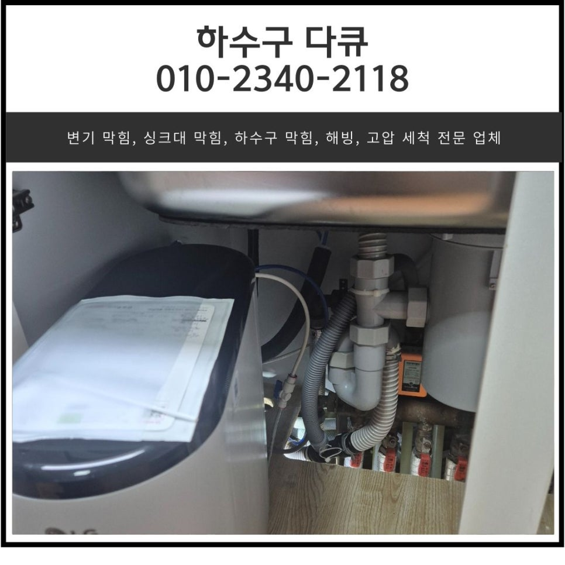
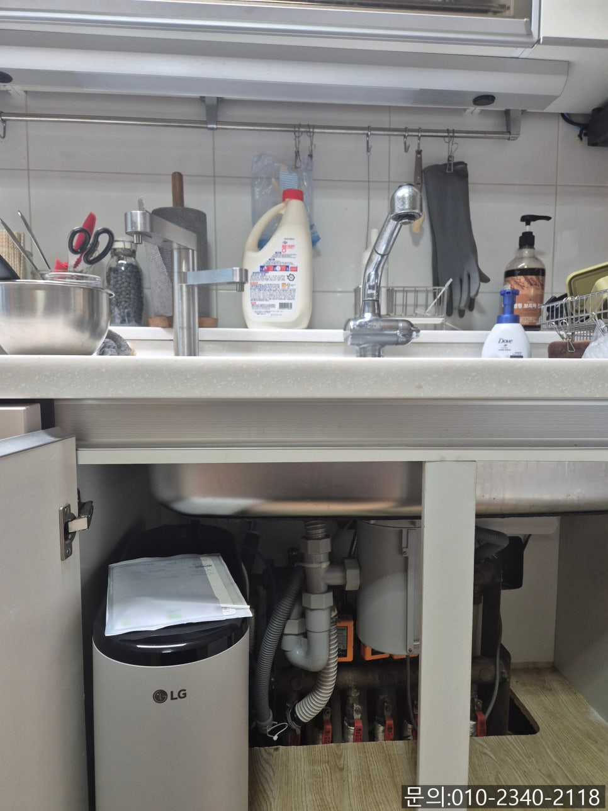
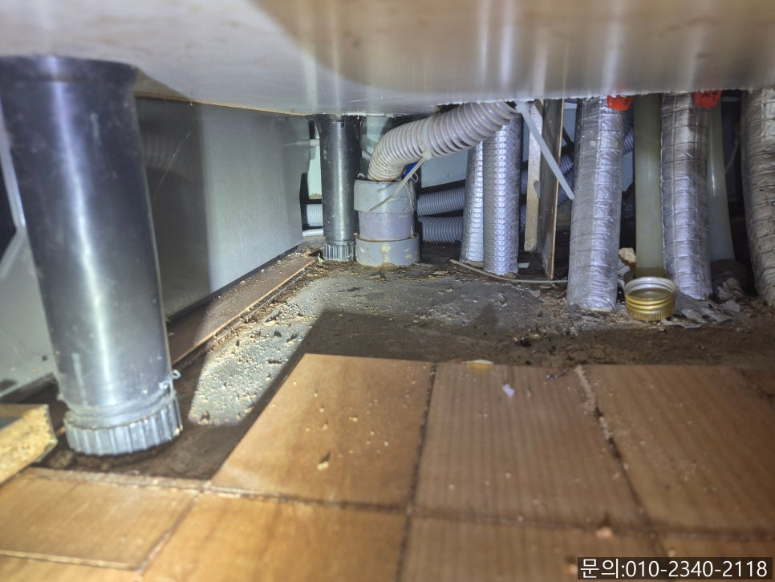
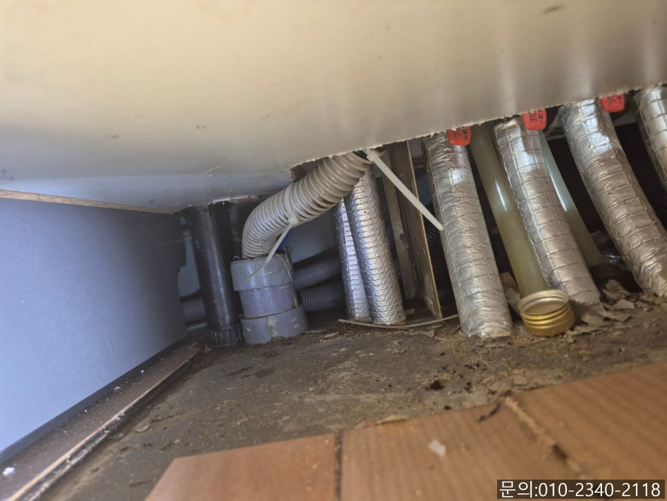
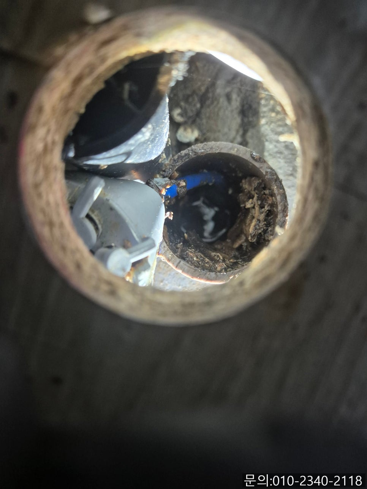
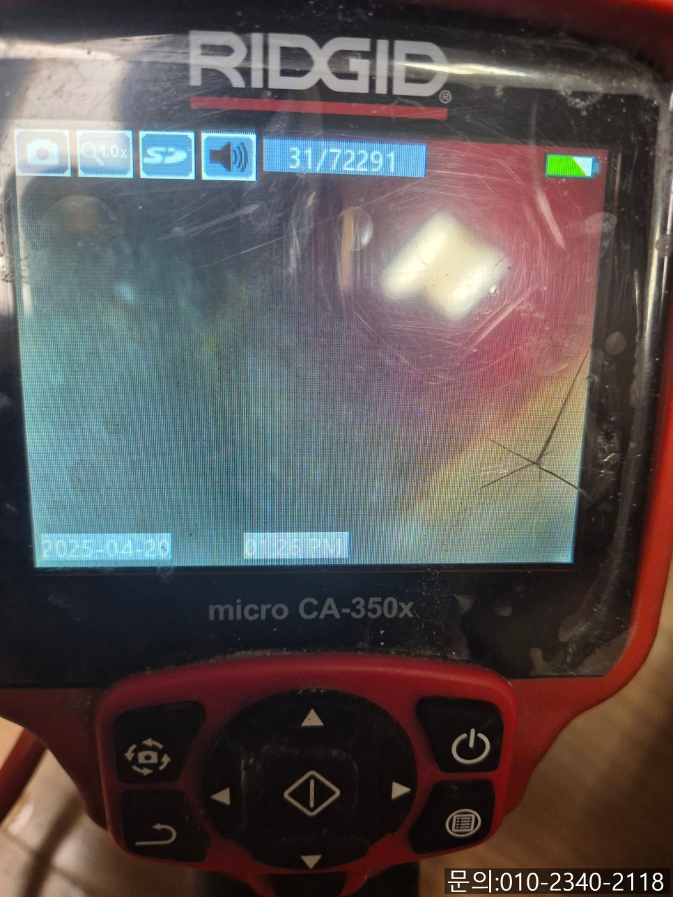
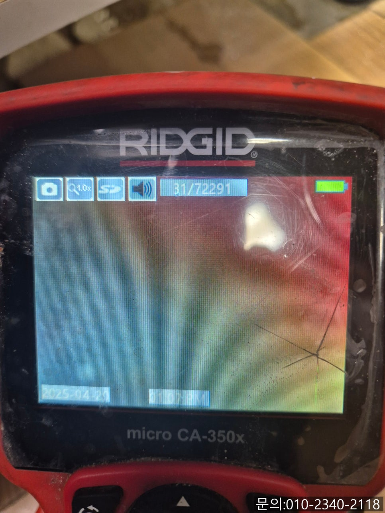

🏠 문현동 싱크대 막힘 광주 쌍령동 하수구 배관 역류 뚫어주는 설비업체
광주 쌍령동 싱크대막힘 전문 시공 후기

📋 작업 개요
- 위치: 광주 쌍령동, 쌍령동, 광주
- 서비스 유형: 싱크대막힘, 하수구막힘, 배관막힘, 역류해결, 뚫는업체, 배관청소
- 작업 일시: 2025. 4. 25. 13:07
- 업체명: 하수구수사대 (010-5615-2118)
🔍 문제 상황
안녕하세요
문현동 싱크대 막힘, 광주 쌍령동 하수구 배관 역류 뚫어주는 설비 업체 하수구 다큐입니다.
주방, 화장실, 세탁실 등 집에서 우리가 물을 사용하게 되면 배관으로 흘러가게 되는데요.
이때 물만 흘러간다면 좋겠지만 먼지나 이물질들도 함께 흘러들어가게 됩니다.
배관이 깨끗해 이물질과 함께 물이 잘 흘러간다면 아무런 문제가 되지 않지만, 자주 사용하는 배관들에는 오랜 시간 쌓인 이물질로 인해 문제가 발생하기도 해요.
여기서 발생하는 문제는 대부분 배수가 원활하게 이루어지지 않고 역류하는 현상을 말하는데요.
배관을 타고 흘러가야 할 하수가 반대로 역류하게 되면 악취도 동반하면서 생활이 불편해지게 됩니다.
오늘은 문현동 싱크대 막힘으로 연락을 받고 다녀온 현장을 사진과 함께 소개해 드릴게요.

🔎 원인 분석
💡 전문가 진단: 정밀 진단 장비를 사용하여 슬러지의 고착 여부를 판명하고 타격/세척 작업을 실시했습니다.
문현동 싱크대 막힘으로 다녀온 아파트 싱크대입니다.
위에 보시면 펑크린이 놓여있죠?
며칠 동안 싱크대에서 사용한 물이 배수가 잘되지 않아 약품을 사용하면 괜찮아지겠지? 하는 마음으로 펑크린을 구매해 사용해 보셨다고 해요.
펑크린을 부어주고 다음날 조금 괜찮아지나 싶더니 다시 배수가 잘되지 않아 주변에 수소문한 끝에 하수구 다큐로 연락을 주셨습니다.
문현동 싱크대 막힘 고객님의 전화를 받고 현장에 도착 싱크대 점검을 시작했어요.
먼저 통수 테스트를 진행해 보니 말씀하신 것처럼 물이 내려가는 속도가 많이 느려져있는 상태였습니다.
걸레받이를 들어내고 아래쪽을 살펴보니 아주 적은 양이었지만 배관에서 조금씩 역류한 흔적도 확인할 수 있었어요.
정확한 원인을 찾아보기 위해 배관 전용 내시경 카메라를 이용해 확인해 보기로 했습니다.

🔧 작업 과정
사람들도 위나 대장 등을 검사할 때 내시경을 진입시켜 검사해 보는 것과 같이 하수구 배관에서 막힘이나 역류가 발생했을 때도 내시경 카메라를 집어넣어 정확한 원인을 파악하는 게 가장 중요합니다.
배관 내부로 진입한 내시경 카메라로 촬영한 모습입니다.
기름 슬러지가 배관 내부에 쌓여 있는 상태이다 보니 물의 흐름을 방해하고 있었어요.
고객님께 배관의 상태를 설명해 드리고, 발생되는 비용과 작업에 걸리는 시간 등 상세하게 말씀드리고 청소작업을 진행하기로 했습니다.
광주 쌍령동 하수구 배관 역류 뚫어주는 설비 업체 하수구 다큐는 플렉스 샤프트 장비를 진입시켜 작업을 진행하기로 했어요.
배관에 진입했던 노즐에 기름 슬러지들이 잔뜩 묻어 나오는 것을 어렵지 않게 확인할 수 있었습니다.
물과 기름 성분 음식물 찌꺼기들이 뒤엉켜 찐득한 상태로 내부에 쌓여있다 보니 작업이 쉽지 않았어요.
내시경 카메라로 확인해가며 플렉스 샤프트로 기름 슬러지를 제거하는 작업을 진행했습니다.
고객님께서 이사 오신지 3년째라고 하셨는데요.
그동안 배관 청소를 한 번도 해본 적이 없어서 내부도 청소해야 하는 건지 몰랐다고 말씀해 주셨어요.
아무래도 배관을 자주 사용하지만 매립되어 있어 눈에 보이지 않다 보니 신경 쓰시기 어려우셨을 것 같습니다.
여러 번 반복해서 작업을 진행하자 기름 슬러지가 제거되면서 깨끗해진 배관 내부를 확인할 수 있었어요.
마지막으로 많은 양의 물을 한 번에 흘려보내면서 통수 테스트를 진행해 드렸어요.


✅ 작업 완료
처음 현장에 도착했을 때와는 다르게 시원하게 물이 빠지는 것을 확인할 수 있었습니다.
작업을 지켜보시던 고객님께서도 진작에 전문가에게 맡길 걸 며칠을 허비했다고 안타까워하셨어요.
쌍령동 하수구 배관 역류 뚫어주는 설비 업체 하수구 다큐는 싱크대를 관리하는 방법에 대해 설명해 드리고 장비를 챙겨 철수할 수 있었습니다.
경기도 평택시 고덕중앙로 322 4층 129호




⚠️ 주방 싱크대 배관 막힘 예방 수칙
- ✅ 기름기가 묻은 식기나 프라이팬은 설거지 전 키친타올로 반드시 기름때를 닦아내세요.
- ✅ 주기적으로 싱크대 개수대에 뜨거운 물을 가득 받아 한 번에 내려 배관 내부 기름을 씻어내세요.
- ✅ 배수구 거름망을 미세한 필터로 사용하시고 음식물 찌꺼기가 틈으로 새어 들지 않게 관리하세요.
- ✅ 베이킹소다와 식초를 뜨거운 물과 함께 일주일에 한 번씩 부어주면 배관 살균과 막힘 예방에 좋습니다.
💡 핵심 정리
- 확실한 장비 작업(내시경 점검 및 샤프트 스케일링)으로 원인을 뿌리 뽑습니다.
- 작업 후 1년 이내에 동일한 부위 재발 시 100% 무상 A/S 서비스를 보장합니다.
- 서울 · 경기 · 인천 전 지역에 24시간 언제든 긴급 출동할 수 있도록 항시 대기 중입니다.
❓ 자주 묻는 질문 (FAQ)
🚨 광주 쌍령동 싱크대막힘 문제로 고민이신가요?
정확한 원인 진단과 확실한 시공으로 재발 없는 해결을 약속드립니다.
24시간 긴급 출동 | 서울 · 경기 · 인천 전지역 | 1년 내 재발 시 무상 A/S